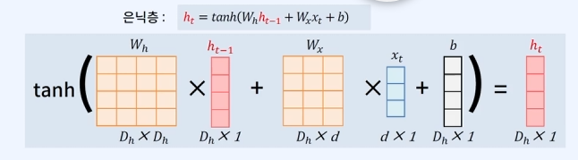

1 요약
이 문서는 순차적인 데이터, 특히 텍스트와 같은 시퀀스 정보를 처리하기 위해 설계된 RNN(Recurrent Neural Network, 순환 신경망)의 기본적인 작동 원리와 구조를 설명한다.
- RNN의 핵심 아이디어:
- 기존의 피드포워드 신경망(FFNN)과 달리, RNN은 내부에 순환하는 루프(loop)를 가지고 있어 이전 단계의 정보를 기억하고 현재 단계의 처리에 활용한다.
- 각 시점(time step)에서 입력값과 이전 시점의 은닉 상태(hidden state)를 함께 사용하여 현재 시점의 은닉 상태를 갱신한다. 이 은닉 상태가 문맥 정보를 담고 있다고 간주된다.
- 기본 구조 및 처리 과정:
- RNN은 입력 시퀀스의 길이에 따라 네트워크가 펼쳐지며(unrolled), 각 시점마다 동일한 가중치를 공유한다.
- 주요 구성 요소로는 입력 벡터(\(x_t\)), 은닉 상태 벡터(\(h_t\)), 출력 벡터(\(y_t\)) 및 이들 간의 변환을 위한 가중치 행렬(\(W_x, W_h, W_y\))과 편향(\(b_h, b\))이 있다.
- 은닉 상태는 주로 하이퍼볼릭 탄젠트(tanh) 활성화 함수를 통해 계산된다.
- 다양한 RNN 구조:
- 입력과 출력의 관계에 따라 One-to-Many (예: 이미지 캡셔닝), Many-to-One (예: 텍스트 분류), Many-to-Many (예: 시퀀스 레이블링) 등 다양한 형태로 설계될 수 있다.
- 의의: RNN은 단어의 순서가 중요한 자연어 처리 분야에서 문맥을 이해하는 모델의 기초를 제공했다. 비록 장기 의존성 문제 등의 한계로 LSTM, GRU와 같은 개선된 모델이나 트랜스포머와 같은 새로운 아키텍처로 발전했지만, 순차 정보 처리의 기본적인 아이디어를 제시했다는 점에서 중요하다.
이 문서를 통해 독자는 RNN이 어떻게 순차적 정보를 처리하고 문맥 정보를 기억하며 다음 예측에 활용하는지에 대한 기본적인 이해를 얻을 수 있다.
2 텍스트 인코딩 및 벡터화
텍스트 벡터화
├── 1. 전통적 방법 (통계 기반)
│ ├── BoW
│ ├── DTM
│ └── TF-IDF
│
├── 2. 신경망 기반 (문맥 독립)
│ ├── 문맥 독립적 임베딩
│ │ └── Embedding Layer (딥러닝 모델 내 구성 요소)
│ ├── Word2Vec (CBOW, Skip-gram)
│ ├── FastText
│ ├── GloVe
│ └── 기타 모델: Swivel, LexVec 등
│
└── 3. 문맥 기반 임베딩 (Contextual Embedding)
├── RNN 계열
├── LSTM
├── GRU
└── ELMo2.1 문맥을 고려한 벡터화 (2018-현재): 동적 임베딩
2.1.1 RNN (Recurrent Neural Network)
- FFNN(Feed Forward Neural Network): 행렬과 벡터 연산으로 이루어진다.
- RNN: 행렬과 벡터 연산 + 자기 자신의 출력을 다시 입력으로 사용한다.
- 연속적인 시퀀스를 처리하기 위한 신경망
- 사람은 이전 단어들에 대한 이해를 바탕으로 다음 단어를 이해한다.
- 기존의 MLP에 비해서 RNN은 이러한 이슈를 다루며, 내부에 정보를 지속하는 루프로 구성된 신경망
- 단순한 행렬과 벡터 연산을 넘어, 이전 시점의 은닉 상태(hidden state)를 현재 시점의 입력으로 다시 활용하는 순환 구조
- 이러한 “기억” 메커니즘 덕분에 RNN은 시간의 흐름에 따른 연속적인 데이터(시퀀스 데이터) 처리에 매우 효과적
- 핵심 원리: 신경망 내부에 루프(loop)를 만들어 정보가 지속되도록 함으로써, 마치 사람이 이전 대화 내용을 기억하며 다음 문장을 이해하는 것과 유사한 방식으로 작동
- RNN은 입력의 길이만큼 신경망이 펼쳐진다. (unrolled)
- 이때, 입력 받는 각 순간을 시점(time step)이라고 한다.
- 시점 \(t\) 에서 입력 \(x_t\) 와 이전 시점의 은닉 상태 \(h_{t-1}\) 을 받아 현재 시점의 은닉 상태 \(h_t\) 를 계산
- 매시점마다 새로운 입력값을 받고 은닉층에서 이전 시점의 정보를 다음 시점의 은닉층에 전달하는데 이것을 시간순대로 쭉 나열하여 도식화하면 그림이 너무 길어져 은닉층을 하나의 loop형태로 표현한다.
- RNN은 FFNN (or MLP)에 시점을 도입한 개념과 같다.
- RNN의 입력과 출력은 모두 기본적으로 벡터 단위를 가정한다. 따라서, 일반 RNN다이어 그램에선 입력층, 은닉층과 출력층이 소문자로 되어 있지만 모두 벡터라고 생각해야한다.
- NLP에서 각 시점(time step)은 주로 단어 하나 (단어 벡터값) 또는 형태소 (한국어) 하나가 (형태소 벡터)가 된다.
2.1.1.1 RNN의 설계
- RNN의 구조는 설계하기 나름이지만 다음과 같은 유형을 갖는다.
- One to Many
- Image Captioning
- 이미지를 첫 시점에서 입력받아 각 시점에서 출력
- Many to One
- 단어를 각 시점에서 입력받아 맨 마지막 시점의 은닉 상태를 출력
- Text Classification
- 단어들을 입력 받아 이것이 스펨메일인지 아닌지 맨 마지막 시점에서 분류
- Many to Many
- 각 시점에서 입력받은 단어를 각 시점에서 출력
- sequence labeling: 각 단어에 대해 특정 레이블을 할당하는 작업으로, 주로 품사 태깅이나 개체명 인식과 같은 태스크에 사용된다.
- 개체명 인식(Named Entity Recognition, NER): 문장에서 인물, 장소, 조직 등과 같은 고유명사를 식별하고 분류하는 작업
2.1.1.2 Basic Architecture of RNN
- Cell: 은닉층에 있는 RNN의 처리 단위 도식상에서 부르는 명칭, 보통 cell 이나 hidden state 구분없이 부르기도 한다.
- Hidden State: Cell의 출력, RNN에서 부르는 명칭
- RNN은 시점(time step)마다 입력을 받는데 현재 시점의 hidden state인 \(h_t\) 연산을 위해 직전 시점의 hidden state인 \(h_{t-1}\) 을 입력받는다.
- 이게 RNN이 과거의 정보를 기억하는 원리이다.
- 이러한 구조 덕분에 RNN은 시퀀스 데이터를 처리하는 데 매우 효과적이다.
- 문장 내 각 단어는 시점(time step)이 되며, 각 단어는 벡터 형태로 입력된다.
- 각 시점에서 입력된 벡터와 이전 시점의 hidden state를 받아 현재 시점의 hidden state를 계산한다.
- 이렇게 계산된 hidden state는 다음 시점의 입력을 받을 때 사용된다.
- 이 과정을 모든 시점에 반복하여 수행하면 문장 전체에 대한 정보를 효과적으로 표현할 수 있다.
- 입력층: \(x_t\)
- 은닉층 (cell): \(h_t = \tanh(W_{h}h_{t-1} + W_{x}x_t + b_h)\)
- ex) \(h_t = \tanh(W_{h}h_{t-1} + W_{x}x_t + b_h)\)
- 출력층 (output): \(y_t = activation(W_{y}h_t + b)\)
- ex) \(y_t = \text{softmax}(W_{y}h_t + b)\)
- 도식화

d: t time step의 단어 벡터의 차원
\(D_h\): hidden state의 차원 (RNN의 주요 파라미터)
\(W_h\): hidden state에 대한 가중치, 역전파로 최적화되는 파라미터
\(W_x\): 입력에 대한 가중치, 역전파로 최적화되는 파라미터
\(b_h\): hidden state에 대한 편향, 역전파로 최적화되는 파라미터
\(W_y\): 출력에 대한 가중치, 역전파로 최적화되는 파라미터
\(b\): 출력에 대한 편향
tanh: hyperbolic tangent, RNN에서 주로 사용되는 활성화 함수
- sigmoid함수와 달리 -1~1 사이의 값을 가지며, 이는 모델의 출력이 sigmoid 함수(0~1)보다 더 넓은 범위의 값을 가지게 됨을 의미한다.
- tanh 함수는 출력 범위가 -1에서 1로 넓어, 시그모이드 함수의 0에서 1 범위보다 기울기 소실 문제를 줄여준다. 이는 학습 시 더 안정적이고 빠른 수렴을 가능하게 하여 은닉층에서 연산적으로 유리하다.
- 따라서, tanh 함수는 시그모이드 함수보다 더 안정적이고 빠른 수렴을 가능하게 하여 은닉층에서 연산적으로 유리하다.
2.2 결론
본 문서에서는 순차적인 데이터를 효과적으로 처리하기 위해 고안된 RNN(Recurrent Neural Network)의 기본적인 구조와 작동 원리를 살펴보았다. RNN은 이전 시점의 처리 결과를 현재 시점의 입력과 함께 활용하는 순환 구조를 통해 시간의 흐름에 따른 정보의 연속성을 모델링한다.
- RNN의 핵심 원리 요약:
- RNN은 각 시점(time step)에서 입력 벡터와 이전 시점의 은닉 상태(hidden state)를 입력으로 받아 현재 시점의 은닉 상태를 계산한다. 이 은닉 상태는 과거의 정보를 요약하고 있으며, 다음 시점으로 전달되어 문맥 정보를 누적한다.
- 이러한 순환적인 정보 전달 메커니즘은 단어의 순서가 중요한 텍스트 데이터나 시계열 데이터 분석에 적합하다.
- 구조적 특징과 다양성:
- 하나의 셀(cell)이 반복적으로 사용되며, 입력과 출력의 관계에 따라 다양한 형태(One-to-Many, Many-to-One, Many-to-Many)로 구성될 수 있어 여러 종류의 시퀀스 처리 문제에 적용될 수 있다.
- 활성화 함수로는 주로 하이퍼볼릭 탄젠트(tanh)가 사용되어 은닉 상태 값의 범위를 조절한다.
- 문맥 이해의 초기 단계와 한계점:
- RNN은 문맥을 고려한 동적 임베딩의 초기 아이디어를 제공하며, 특히 단어의 순서 정보를 자연스럽게 처리할 수 있는 능력을 보여주었다.
- 그러나 기본적인 RNN 구조는 시퀀스가 길어질수록 앞부분의 정보가 소실되는 장기 의존성 문제(vanishing/exploding gradient)에 취약하다는 단점이 있다. 이러한 한계를 극복하기 위해 LSTM, GRU와 같은 개선된 RNN 셀 구조가 등장했으며, 더 나아가 어텐션 메커니즘과 트랜스포머 아키텍처로 발전하는 계기가 되었다.
결론적으로, RNN은 순차적 데이터 처리와 문맥 정보 활용의 기본적인 패러다임을 제시한 중요한 신경망 모델이다. 비록 자체적인 한계로 인해 현재는 더 발전된 모델들이 주로 사용되지만, 그 핵심 아이디어는 여전히 많은 시퀀스 모델링 기법의 근간을 이루고 있다.